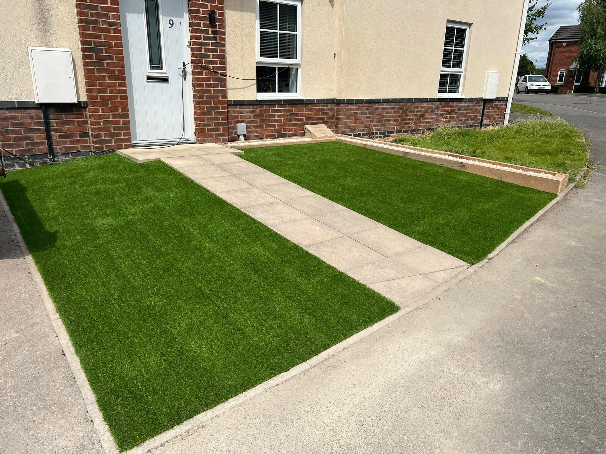
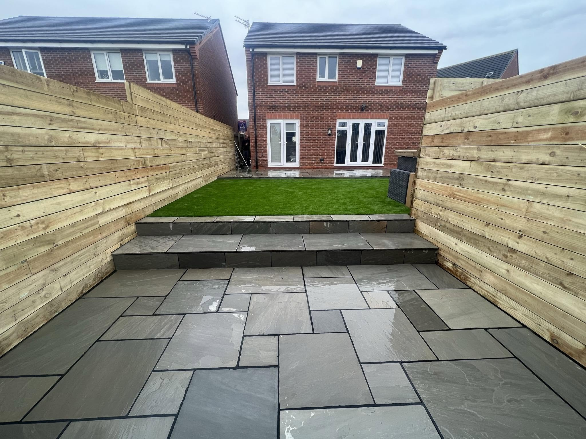
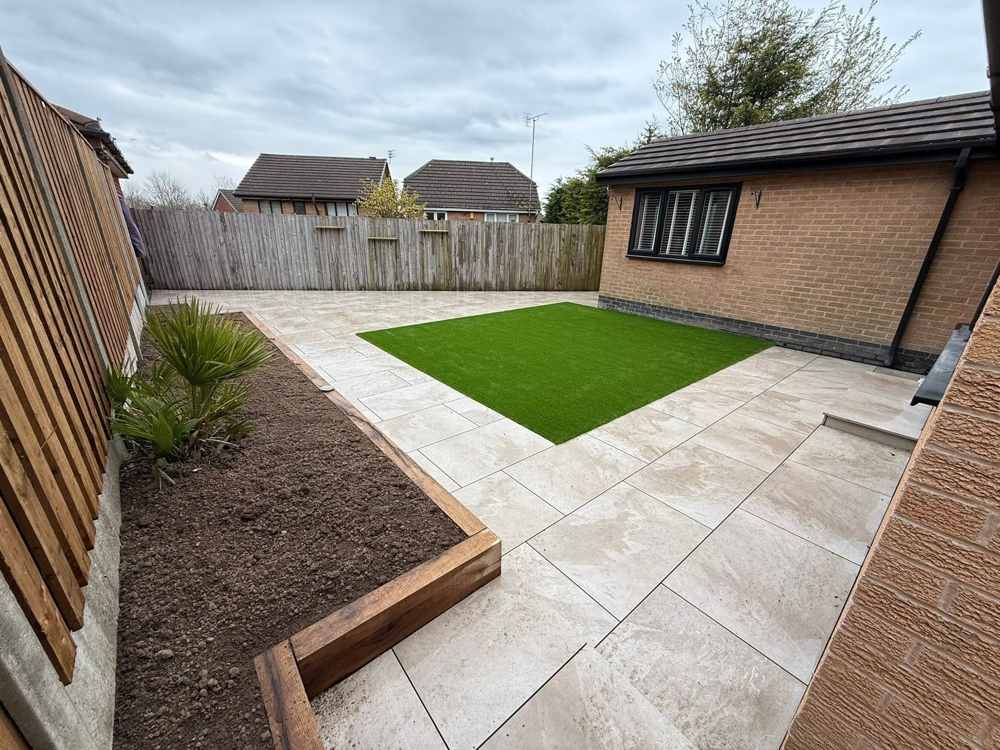
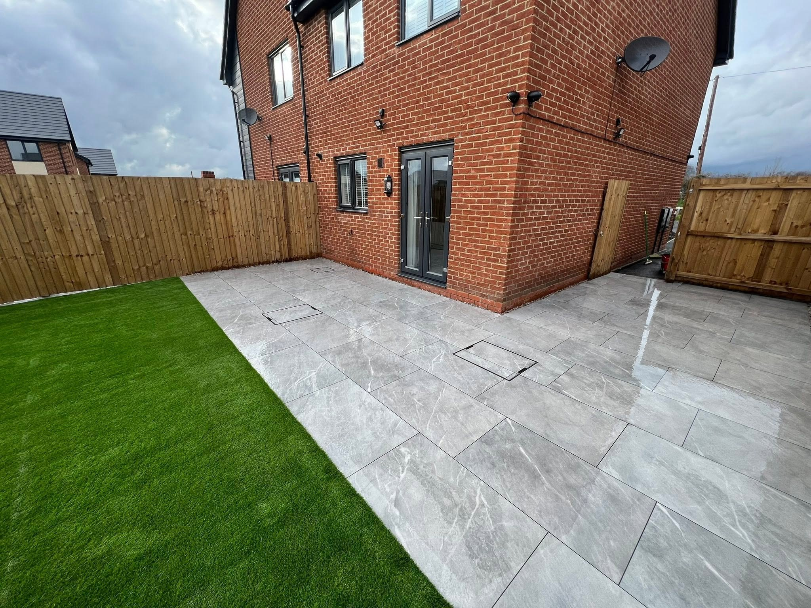
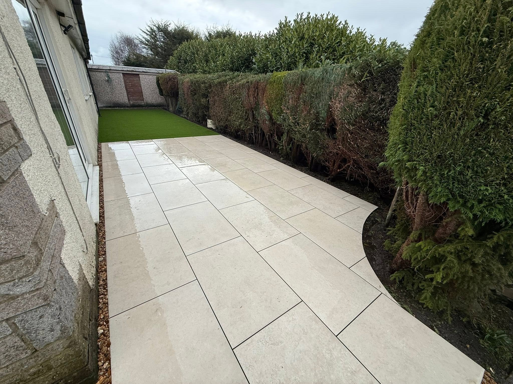
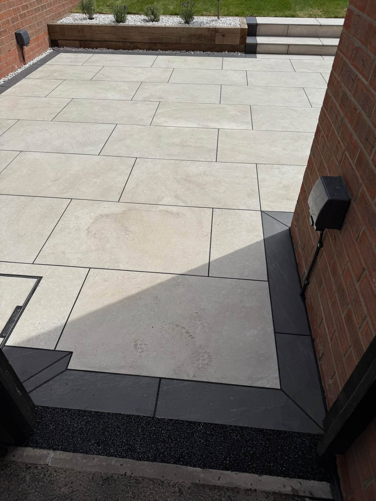
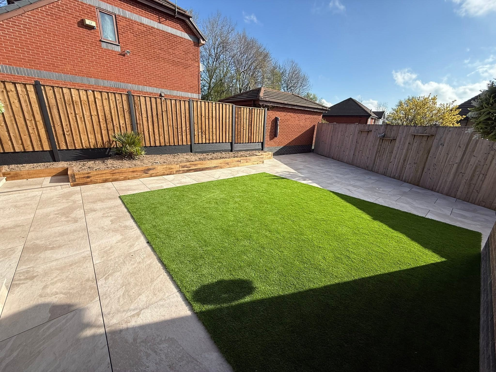

Heywood & Greater Manchester · Resin Driveways in Heywood
Resin Driveways in Heywood
Nuttall Landscapes: resin driveways in heywood. Luxury garden transformations, patios, resin driveways, fencing and lawns. Call 07523 305486 for a free quote.
Resin Driveways in Heywood
A better welcome home.
Nuttall Landscapes specialises in resin driveways as well as garden transformations. Discuss a new surface for your entrance, the finish you have in mind and the way the drive connects to your home.
Request a quote →See the finish in motion.
Watch the resin surfacing video below for a closer look. The photographs on this page show related paving and garden work; the video shows the resin finish.


Patios & paving & Resin driveways
Room to relax. Space to enjoy.
A patio for summer evenings. A lawn with room to play. Paths and borders that connect it all. Explore real Nuttall Landscapes projects and picture what your garden could become.
Discuss your project →

RESIN SURFACING
See the finished surface.
Resin finish, lawn and contrasting edges
RECENT WORK
Resin Driveways in Heywood in pictures.
Nuttall Landscapes: resin driveways in heywood. Luxury garden transformations, patios, resin driveways, fencing and lawns. Call 07523 305486 for a free quote.


Heywood & Greater Manchester
Local team.
Lasting first impressions.
Nuttall Landscapes specialises in luxury garden transformations and resin driveways. Whether you have a clear design or a space that needs a fresh start, get in touch to discuss your plans.
Patios, lawns, garden walls and fencing shaped around the space you want to use.
A local landscaping business serving the area and surrounding communities.
Call or send your postcode, ideas and photographs on WhatsApp.
GOOD TO KNOW
Your questions answered.
Where do you work?
Heywood & Greater Manchester is the supplied service area. Include your postcode so the location can be checked.
Can I send photos with my enquiry?
Yes. The form opens WhatsApp with your details. Attach photos of the space before sending.
How do I get a quote?
Call 07523 305486 or send the work details through the WhatsApp form. You can discuss the project and next steps directly.
REQUEST A QUOTE
Tell us what you have in mind.
Send the details of your project and its location. WhatsApp opens with your enquiry ready to send, where you can also attach photos.
Nuttall Landscapes
Ready to discuss your project?
Heywood & Greater Manchester